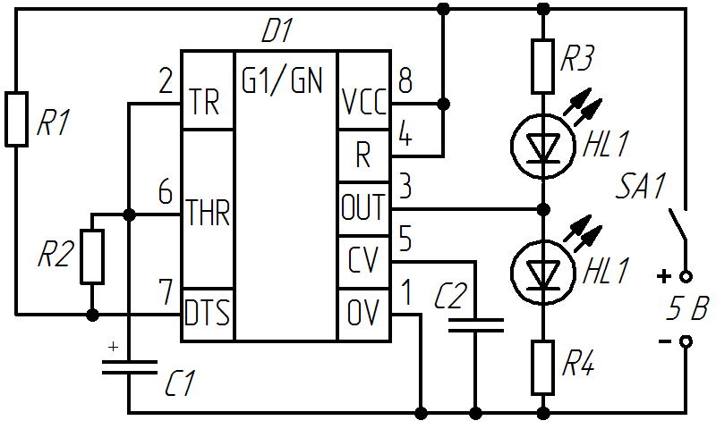

Мигалка на микросхеме NE555
Схема мигалки (рис. 1) построена на основе мультивибратора на микросхеме NE555. В формировании повторяющихся импульсов участвуют резисторы R1, R2 и конденсатор С1. Время импульса (t1), время паузы(t2) и период (T) рассчитывают по формулам:
t1=ln2(R1+R2)C=0,693(R1+R2)C
t2=ln2R2C=0,693R2C
T=ln2(R1+2R2)C=0,693(R1+2R2)C.

Таблица 1
| Позиционное обозначение |
Наименование | Номинал | Кол-во | Замена |
|---|---|---|---|---|
| HL1, HL2 | Светодиод | АЛ307 | 2 | |
| C1 | Конденсатор электролитический | 1 мкФ / 10В | 1 | |
| C2 | Конденсатор | 0, 01 мкФ | 1 | |
| D1 | Микросхема | NE555 | 1 | |
| R1, R2 | Резистор постоянный | 270 кОм | 2 | |
| R1, R2 | Резистор постоянный | 300 Ом | 2 | |
| SA1 | Выключатель | 1 |
В момент подачи питания конденсатор С1 разряжен, что переводит выход таймера в состояние высокого уровня. Затем С1 начинает заряжаться, набирая ёмкость до верхнего порогового значения 2/3Uпит. Достигнув порога ИМС переключается, и на выходе появляется низкий уровень сигнала. Начинается процесс разряда конденсатора, который продолжается до нижнего порогового значения 1/3Uпит. По его достижении происходит обратное переключение, и на выходе таймера устанавливается высокий уровень сигнала. В результате схема переходит в автоколебательный режим.
Сопротивление резисторов R3 и R4 можно рассчитать по формуле:
R=(Uвых-Uсв)/Iсв,
где
Uвых – амплитудное значение напряжения на выводе 3 таймера, В.
Uсв – рабочее напряжение на светодиоде, В.
Iсв – ток через светодиод, А.
В зависимости от типа применяемой микросхемы NE555, её нагрузочной способности (КМОП или ТТЛ) количество подключаемых светодиодов может быть уыеличено. Если использовать светодиоды мощностью более 0,5 Вт, то схему нужно дополнить транзистором, нагрузкой которого станет светодиод.
Если микросхему устанавливать на специальный разъем, то получится прибор для проверки микросхем NE555.
Источники
vip-cxema.org - Стенд для тестирования таймеров 555